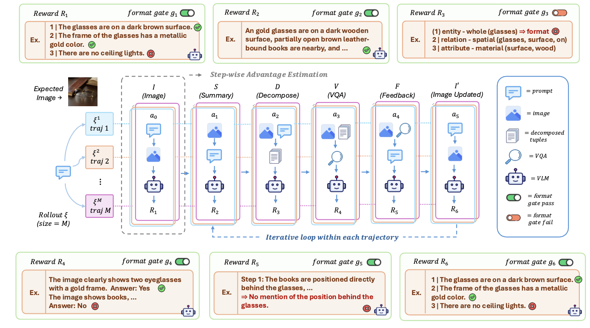
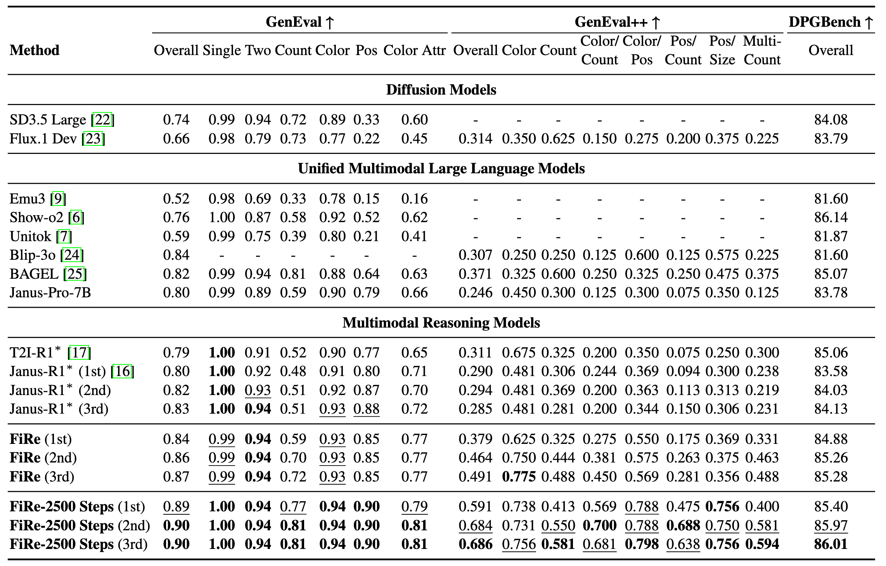
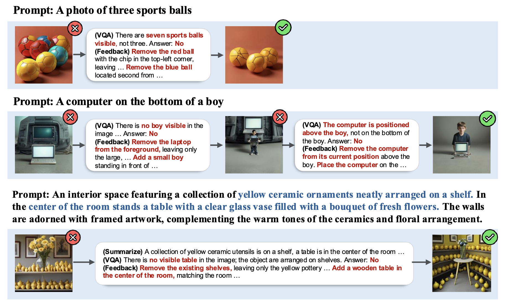

🔥 FiRe: Fine-grained Multimodal Reasoning for Enhanced Image Generation
Abstract
With the rapid progress of Multimodal Large Language Models (MLLMs), unified MLLMs that jointly perform image understanding and generation have advanced significantly. However, despite the inherent reasoning capabilities of unified MLLMs for self-reflection and self-refinement, their use in text-to-image generation remains largely underexplored. Meanwhile, existing multimodal reasoning-based image generation methods mostly rely on prompt augmentation or holistic image-text alignment judgments, without fine-grained reflection and refinement of detailed prompt attributes, leading to limited fine-grained control. To address this limitation, we propose FiRe, a Fine-grained Multimodal Reasoning method for enhanced image generation by MLLM. In specific, FiRe performs a fine-grained multi-step reasoning by first decomposing the prompt into key visual requirements and then self-judging their satisfaction in the generated image, followed by localized refinement according to self-generated precise feedback. In addition, to further strengthen the MLLM's multimodal reasoning ability, we introduce FiRe-GRPO, a reinforcement learning method tailored to FiRe. Since standard Group Relative Policy Optimization (GRPO) suffers from sparse, outcome-based rewards in multi-step reasoning, we formulate our reasoning process as a step-level decision-making problem, design step-specific rewards, and compute step-level advantages for granular credit assignment within GRPO. Extensive experiments demonstrate that FiRe consistently outperforms competitive text-to-image baselines, including existing reasoning-based methods, with particularly substantial gains on compositional text-to-image benchmarks.
Method
FiRe: Fine-grained Reasoning & Self-Correction
FiRe summarizes the prompt into verifiable visual details, decomposes them into atomic semantic tuples (objects, attributes, counts, spatial relations), verifies each tuple against the generated image with tuple-level VQA, and turns any unsatisfied tuple into an explicit correction instruction — which is then applied through localized image editing that fixes only the mismatched regions while preserving everything already correct.
FiRe-GRPO: Step-Level Reinforcement Learning
Standard GRPO assigns a single, trajectory-level reward to the whole reasoning-and-generation rollout, so every step — whether it was the tuple decomposition, the VQA verification, or the final edit — gets the same credit regardless of which step actually caused the outcome, making it hard to tell which reasoning step to reinforce and which to discourage. FiRe-GRPO instead assigns step-specific rewards and estimates the advantage of each step separately within the same trajectory, then optimizes the policy with GRPO — enabling precise, step-level credit assignment and yielding better fine-grained image-prompt alignment.

Figure 2. Overview of FiRe-GRPO.
Results
Quantitative Results

Table 1. Comparison on GenEval, GenEval++, and DPGBench.
Qualitative Results

Figure 3: Qualitative Results of FiRe.
BibTeX
@article{kim2026fire,
title={FiRe: Fine-grained Multimodal Reasoning for Enhanced Image Generation},
author={Kim, Yongjin and Oh, Yoonjin and Kim, Yerin and Kim, Hyomin and Yun, Jeeyoung and Heo, Yujung and Kim, Minjun and Kim, Sungwoong},
journal={arXiv preprint arXiv:2604.13491},
year={2026}
}